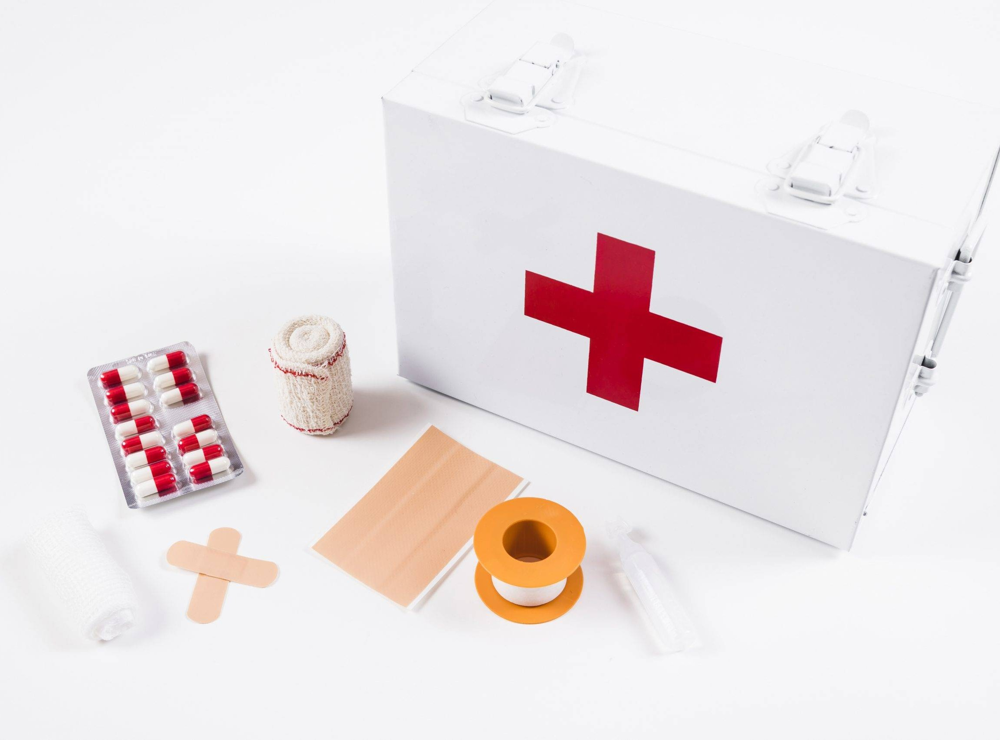

P3K & Tanggap Darurat
Pengertian & Tujuan
P3K (Pertolongan Pertama pada Kecelakaan) adalah bantuan awal kepada pekerja yang mengalami cedera atau penyakit mendadak di area kerja potline, furnace, pelabuhan bongkar muat, maupun fasilitas pendukung PT INALUM sebelum mendapat penanganan tenaga medis. Sistem tanggap darurat memastikan respon cepat terhadap insiden seperti kebakaran, paparan bahan kimia, atau ledakan.
Tujuan P3K & tanggap darurat di PT INALUM adalah:
- Menyelamatkan nyawa dan mempertahankan fungsi vital.
- Mencegah kondisi memburuk dan mencegah komplikasi.
- Mengurangi rasa sakit dan memberikan kenyamanan.
- Mempercepat pemulihan hingga mendapat perawatan lanjutan.
- Mendukung budaya zero accident di seluruh area produksi dan utilitas.
- Setiap area dilengkapi kotak P3K, petugas P3K terlatih, dan terhubung dengan Tim Tanggap Darurat (ERT) INALUM.
- Prosedur mengacu pada peraturan nasional & pedoman internal K3 PT INALUM.

Peralatan Wajib Kotak P3K
Checklist isi & fungsiSetiap unit kerja PT INALUM (potline, furnace, workshop, pelabuhan, kantor) wajib memiliki kotak P3K dengan isi minimum berikut. Pengisian ulang dilakukan setelah pemakaian dan saat inspeksi berkala.
| Item | Fungsi | Catatan Penggunaan |
|---|---|---|
| Kasa steril & perban elastis | Menutup luka & menghentikan pendarahan ringan | Gunakan teknik balut tekan; ganti bila basah/kotor |
| Plester perekat (assorted) | Menutup luka gores/kecil | Bersihkan kulit sebelum tempel |
| Larutan antiseptik | Membersihkan luka dari kuman | Jangan digunakan pada luka bakar derajat tinggi |
| Saline/NaCl 0,9% | Irigasi luka & cuci mata darurat | Gunakan botol eye wash di area proses & laboratorium |
| Perban segitiga | Immobilisasi sementara (sling) | Kombinasikan dengan bidai bila ada kecurigaan fraktur |
| Sarung tangan sekali pakai | Proteksi penolong & korban | Ganti setiap penanganan pasien |
| Gunting & pinset | Membuka pakaian, memotong perban, mengambil serpihan | Disinfeksi sebelum/sesudah pakai |
| Masker respirator bedah | Mencegah kontaminasi droplet | Pastikan menutup hidung & mulut |
| Termometer & pulse oximeter | Monitoring suhu & saturasi O₂ | Catat hasil pada formulir insiden |
| Selimut darurat (thermal) | Mencegah hipotermia/ syok | Tutup tanpa menekan area luka bakar |
Prosedur Penanganan Luka & Cedera di Area Kerja
Prosedur ini digunakan untuk insiden individu seperti terjatuh, tertimpa, tersiram logam cair, paparan bahan kimia, tersengat listrik, dan cedera lainnya di area kerja PT INALUM.
- Amankan lokasi: hentikan sumber bahaya (matikan mesin/listrik, hentikan proses tapping atau pengangkatan crane), pasang rambu dan cegah orang lain mendekat.
- Nilai kondisi korban: cek respons, jalan napas, pernapasan, sirkulasi (primary survey).
- Panggil bantuan: hubungi Petugas P3K, Supervisor, dan Klinik Perusahaan melalui nomor darurat internal.
- Tindakan awal sesuai kasus: lakukan pertolongan pertama sesuai jenis cedera (perdarahan, luka bakar, listrik, kimia, fraktur, atau sesak napas).
- Siapkan rujukan: bila kondisi sedang-berat, bawa ke Klinik INALUM/RS rujukan menggunakan kendaraan dinas/tandu; sertakan catatan P3K.
- Dokumentasi & pelaporan: isi Formulir Laporan Kecelakaan Kerja (LK3), laporkan ke Departemen K3 untuk investigasi.
1. Amankan
Hentikan sumber bahaya & lindungi penolong/korban
2. Nilai & Tolong
Survey cepat & tindakan P3K sesuai cedera
3. Rujuk & Laporkan
Klinik/RS, isi LK3, investigasi K3
Evakuasi & Muster Point
Evakuasi dilakukan bila terjadi keadaan darurat yang berpotensi memengaruhi banyak orang, misalnya kebakaran di furnace, kebocoran gas, ledakan, atau gempa bumi. Setiap area di PT INALUM memiliki jalur evakuasi dan muster point (titik kumpul) yang telah ditetapkan.
Langkah Evakuasi
- Ikuti instruksi alarm/sirene darurat dan pengumuman dari ruang kontrol.
- Hentikan pekerjaan, lepaskan peralatan dari sumber energi bila aman dilakukan.
- Bantu rekan kerja yang membutuhkan bantuan, gunakan tandu di area produksi bila diperlukan.
- Ikuti jalur evakuasi yang ditandai menuju area terbuka yang aman.
- Jangan menggunakan lift dan jangan kembali untuk mengambil barang pribadi.
Muster Point (Titik Kumpul)
- Tiap unit (potline, PLTA, pelabuhan, kantor) memiliki muster point yang diberi papan penanda.
- Setibanya di muster point, pekerja berbaris sesuai unit/shift masing-masing.
- Supervisor melakukan head count untuk memastikan tidak ada pekerja yang tertinggal di area berbahaya.
- Tetap di muster point sampai Tim Tanggap Darurat atau Departemen K3 menyatakan area aman.
Penanganan Kebakaran di Area Kerja
Di lingkungan peleburan aluminium, potensi kebakaran dapat muncul dari logam cair, instalasi listrik, bahan kimia, maupun kebocoran bahan bakar. Penanganan harus cepat namun tetap mengutamakan keselamatan.
Bila Api Masih Kecil & Terkendali
- Pastikan Anda telah menggunakan APD yang sesuai dan telah mendapat pelatihan penggunaan APAR.
- Aktifkan alarm lokal atau informasikan ke ruang kontrol.
- Pilih jenis APAR yang tepat (mis. CO₂ atau dry chemical untuk listrik/peralatan).
- Gunakan metode PASS: Pull (cabut pin), Aim (arahkah nosel), Squeeze (tekan handle), Sweep (sapu ke arah dasar api).
- Hentikan upaya pemadaman dan segera evakuasi bila api membesar atau asap terlalu tebal.
Bila Api Besar / Mengancam
- Segera aktifkan sistem alarm dan hubungi Tim Tanggap Darurat/Fire Brigade INALUM.
- Lakukan evakuasi teratur menuju muster point sesuai jalur evakuasi.
- Jangan memadamkan api logam cair dan kebakaran besar sendirian.
- Jangan menggunakan air pada kebakaran listrik atau bahan kimia tertentu.
- Ikuti instruksi Komandan Insiden hingga keadaan dinyatakan aman.
Tabel Pertolongan Pertama di Tempat Kerja
Tabel berikut memberikan contoh tindakan P3K untuk beberapa jenis kecelakaan yang umum di area peleburan, utilitas, dan fasilitas pendukung PT INALUM.
| Jenis Kecelakaan | Tindakan Pertolongan Pertama |
|---|---|
| Terjatuh / Tersandung | Periksa kesadaran dan pernapasan; hentikan pendarahan bila ada; imobilisasi bagian yang dicurigai cedera; rujuk ke fasilitas medis. |
| Tertimpa Benda Berat | Pastikan alat berat dimatikan; evakuasi korban dengan hati-hati; stabilkan cedera; hindari menggeser korban bila dicurigai cedera tulang belakang. |
| Terpapar Bahan Kimia | Segera evakuasi ke udara segar; bilas area terpapar dengan air/NaCl mengalir; lepas pakaian terkontaminasi; bawa korban ke fasilitas medis. |
| Tersengat Listrik | Putus sumber listrik sebelum menyentuh korban; periksa kesadaran & pernapasan; lakukan CPR bila diperlukan; rujuk ke fasilitas medis. |
| Pendarahan Berat | Tekan luka dengan kain/perban bersih; gunakan tourniquet bila perlu dan terlatih; jaga korban tetap hangat; segera bawa ke fasilitas medis. |
| Cedera Patah Tulang | Imobilisasi dengan bidai; jangan meluruskan tulang yang bengkok; hindari mengangkat korban tanpa penyangga; rujuk ke fasilitas medis. |
| Keracunan Gas / Asfiksia | Evakuasi ke udara segar; longgarkan pakaian ketat; bila perlu berikan CPR; segera rujuk ke fasilitas medis. |
| Ledakan / Kebakaran | Amankan area; evakuasi korban dari sumber api; gunakan APAR hanya bila aman dan terlatih; tangani luka bakar sesuai derajat; bawa ke fasilitas medis. |
Tim Tanggap Darurat & Tanggung Jawab
Dalam setiap insiden, koordinasi yang baik antara pekerja, petugas P3K, Supervisor, dan Tim Tanggap Darurat (ERT) sangat penting untuk meminimalkan dampak kecelakaan.
- Pekerja: menghentikan pekerjaan bila tidak aman, melapor insiden, membantu sesuai pelatihan, tidak memindahkan korban secara ceroboh.
- Petugas P3K: memberikan pertolongan pertama, mengatur penggunaan kotak P3K, menyiapkan rujukan & dokumentasi LK3.
- Supervisor/Foreman: mengamankan area, memastikan evakuasi ke muster point, melakukan head count, menghubungi Departemen K3 & ERT.
- Tim Tanggap Darurat (ERT)/Fire Brigade: memimpin penanganan kebakaran, tumpahan bahan kimia, penyelamatan korban, dan koordinasi dengan pihak eksternal bila diperlukan.
- Departemen K3: menerima laporan insiden, melakukan investigasi akar penyebab, merekomendasikan tindakan pencegahan & perbaikan, mengupdate SOP & pelatihan.
- Klinik Perusahaan: memberikan penanganan medis lanjutan, menentukan kebutuhan rujukan ke RS, serta mendokumentasikan data medis kecelakaan kerja.